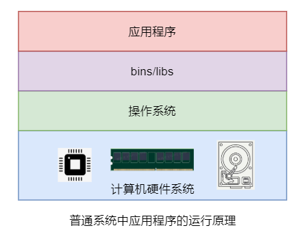
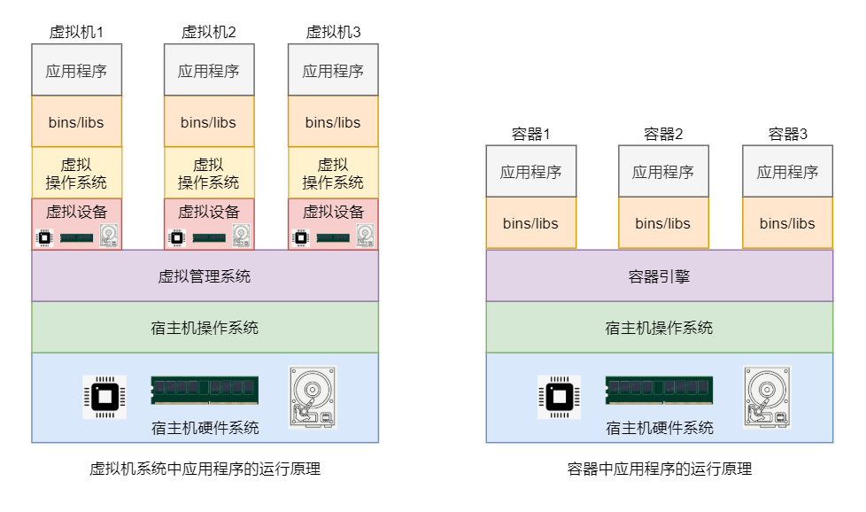
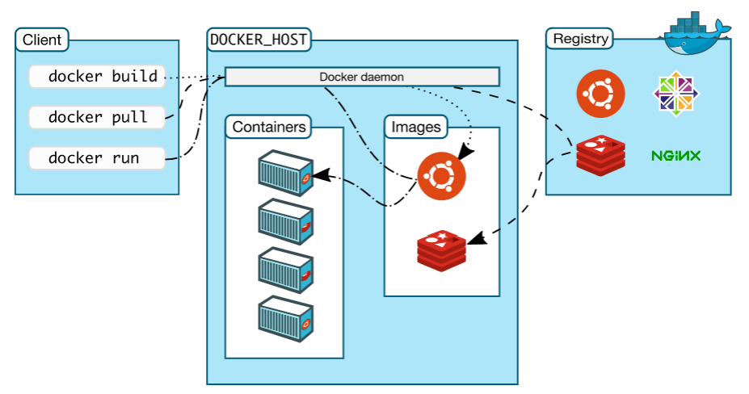
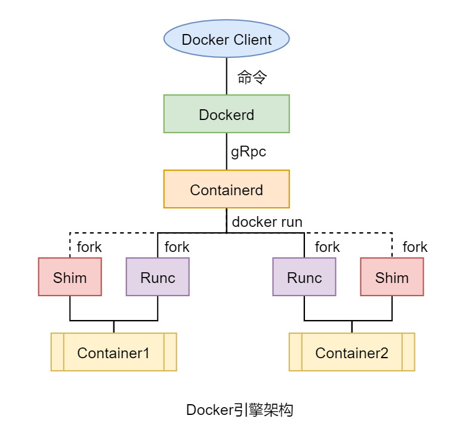

docker 简介
Docker 是一个使用 Go 语言开发的开源的应用容器引擎， 其可以让开发者将应用及应用运行的环境打包到一个轻量级、可移植的镜像中，然后发布到任何流行的 Linux、Windows 机器上
Docker 从大版本分为三类：Moby、社区版 Docker-CE（Community Edition）和企业版 Docker-EE（Enterprise Edition）
核心用途：
- 提供统一的运行环境，确保在任何宿主机 HOST 上都可以跑出相同的结果
- 便捷的应用迁移
- 超快的启动时间
- 轻松的维护和扩展
容器技术与虚拟机区别
- 正常程序运行

- 虚拟化技术与容器虚拟化技术

由于 Docker 容器不需要进行虚拟硬件及操作系统，而是共享的宿主机的硬件与操作系统，所以 Docker 容器对系统资源的占用很少，其仅包含运行时必须的一些资源。
所有 Docker 容器对于系统资源的使用都是由 Docker 引擎统一进行管理，所以对系统资源的利用率很高。无论是应用执行速度、内存损耗或者文件存储速度，都要比传统虚拟机技术更高效。
docker 系统架构

-
Docker Daemon 即 Dockerd，Docker 守护进程，其监听着 Docker API 请求并管理 Docker对象，例如镜像、容器、网络和卷。守护进程还可以与其他守护进程通信以管理 Docker 服务
-
镜像 Image Docker 镜像是用于创建 Docker 容器的模板
-
容器 Container Docker 容器是镜像运行时的实体，一个镜像同样也可以创建出 N 多个容器。每个处于运行状态的容器中都包含着一个或多个相关的应用，且它的运行不会干扰到其它容器，它们之间是相互隔离的
-
仓库 Repository Docker 镜像仓库用来保存相关的一组镜像，这组镜像具有相同的镜像名称，都与镜像仓库名称相同
-
标签 Tag 通过< repository >:< tag >即可唯一定位一个镜像。即镜像标签其实就是镜像仓库中用于区分各个镜像的一种标识，同一仓库中的镜像具有不同的标签
-
镜像中心 Registry 镜像中心中存放着很多由官方、其他机构或个人创建的 Docker 仓库，Docker用户可以直接从这些仓库中 pull 需要的镜像，也可以将自己制作的镜像 push 到 Docker 镜像中心相应的仓库中。由于Docker官方的Docker Hub（https://hub.docker.com）被墙，可用的镜像中心是阿里云等国内镜像中心，需要自行配置
docker 引擎架构

-
Docker Client Docker 客户端，Docker 引擎提供的 CLI 工具，用于用户向 Docker 提交命令请求
-
Docker Daemon 包含的功能有镜像构建、镜像管理、REST API、核心网络及编排等。其通过 gRPC 与 Containerd 进行通信
-
Container Daemon 主要功能是管理容器的生命周期。不过，其本身并不会去创建容器，而是调用 Runc 来完成容器的创建
-
Run Container Runc 只有一个作用—创建容器，其本质是一个独立的容器运行时 CLI 工具。其在 fork出一个容器子进程后会启动该容器进程。在容器进程启动完毕后，Runc 会自动退出
-
containerd-shim 每个容器对应一个 shim 进程,同时作为容器的"父进程"回收退出状态 ; 让容器进程与 containerd/dockerd 解耦：containerd/dockerd 崩溃或升级时，容器仍可继续运行
docker 服务启停
|
|